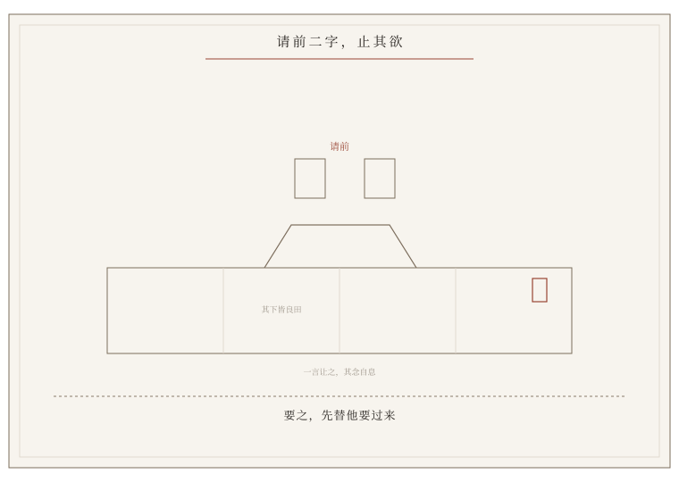

檀弓上 · 三·六十四 · 第 267 课
公叔文子升于瑕丘，蘧伯玉从。文子曰：「乐哉，斯丘也！死则我欲葬焉。」蘧伯玉曰：「吾子乐之，则瑗请前。」
说什么事：一句赏景的话，露出了占人良田的念头。伯玉不驳，只说「那你喜欢，我先」。
落在哪一层：礼，兼及礼数与礼意。论「讽而不斥」。
为何编在此位：上节论谋者之责（言），此节论言之用（以言止言）。两节皆关「一句话的分量」。
【经】公叔文子升於瑕丘，蘧伯玉從。文子曰：「樂哉，斯丘也！死則我欲葬焉。」蘧伯玉曰：「吾子樂之，則瑗請前。」
【注】二子，卫大夫。文子，献公之孙，名拔。刺其欲害人良田。瑗，伯玉名。
【疏】此一节论蘧伯玉仁者，刺文子欲害人良田之事。案《世本》云：「献公生成子当，当生文子拔，拔生朱，为公叔氏。」
瑕丘 地名，卫地之丘。其地有良田。
蘧伯玉 卫大夫，名瑗。孔子所称「邦有道则仕」者。
乐哉斯丘也 此丘真好啊。
死则我欲葬焉 死了我要葬在这里。
请前 请让我先（死、先葬于此）。三字含三义：先死、先葬、先让。
害人良田 以墓地占人之田。注「刺其欲害人良田」。
公叔文子登上瑕丘，蘧伯玉随从。文子说：「这丘真好啊！我死了想葬在这里。」蘧伯玉说：「您既然喜欢，那就让我先（葬在这儿）吧。」
「请前」二字，是《檀弓》中最省力的一次阻止。
文子之意：此丘好，我死了要占它。伯玉之意：你要占，那我先占——你若真喜欢，就先把我埋进去。一句谦让的话，把「占」变成「让」，占的念头当场熄灭。
注一句「刺其欲害人良田」。刺者，讥也。伯玉不曰「不可」，不曰「此非礼」，只曰「请前」。此为「讽」：言在此而意在彼，且意在其人自悟。
此节与 262 司寇惠子之丧同类：皆不斥而斥。262 用位，此用言。位可改，言不可辩。
第一层 一句赏景如何变成占田 「乐哉，斯丘也」是审美；「死则我欲葬焉」是占有。两句之间没有过渡——这正是古人的笔法：不写他怎么想，只写他怎么从「看」跳到「要」。一跳到「要」，礼就出场了。
第二层 「请前」的三义 一、先死：你先葬，我得先死才轮得上；二、先葬：我先占这块地；三、先让：我先让给你。三义叠在一处，故听者无以为答。若伯玉明说「不可」，文子可辩；说「请前」，文子无从辩。
第三层 良田之重 注「害人良田」，不曰「害人墓地」。田是生者之食，墓地是死者之居。以死者之居夺生者之食，此为其刺之实。古人于田极重，故一语及此即止。
第四层 伯玉其人 孔子称蘧伯玉「邦有道则仕，邦无道则可卷而怀之」。此节所记，正是「卷而怀」的一种：不争、不斥、以退为止。
与今日何干 有人看中了一块不该动的地方——一块田、一处旧屋、一个人的位置。直说常招辩，绕说常无效。此节给的法子是：把他要的东西，先替他要过来。他若真有分寸，自己就退了。
| 左 | 右 |
|---|---|
| 乐哉斯丘 | 审美 |
| 死则我欲葬焉 | 占有 |
| 欲葬 | 害人良田 |
| 请前 | 先死／先葬／先让 |
| 不曰不可 | 留人自悟 |
| 讽 | 言在此而意在彼 |
| 位可改 | 262 之法 |
| 言不可辩 | 此节之法 |
画一座小丘与丘下一片整齐的田，视点平远。丘顶立着两位士人：左者（文子，年长、宽袖、抬手直指丘顶前方），右者（伯玉，略后、拱手、身微前倾作请状）。丘下田间有农人正插秧，田埂齐整。不写文字、不画人面细节。赭色只用在文子所指的那一小片丘顶土色与田埂尽头的一块界石。
